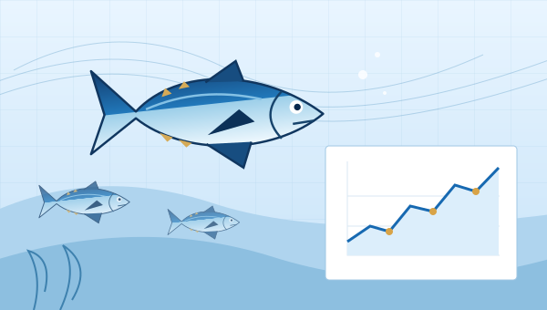
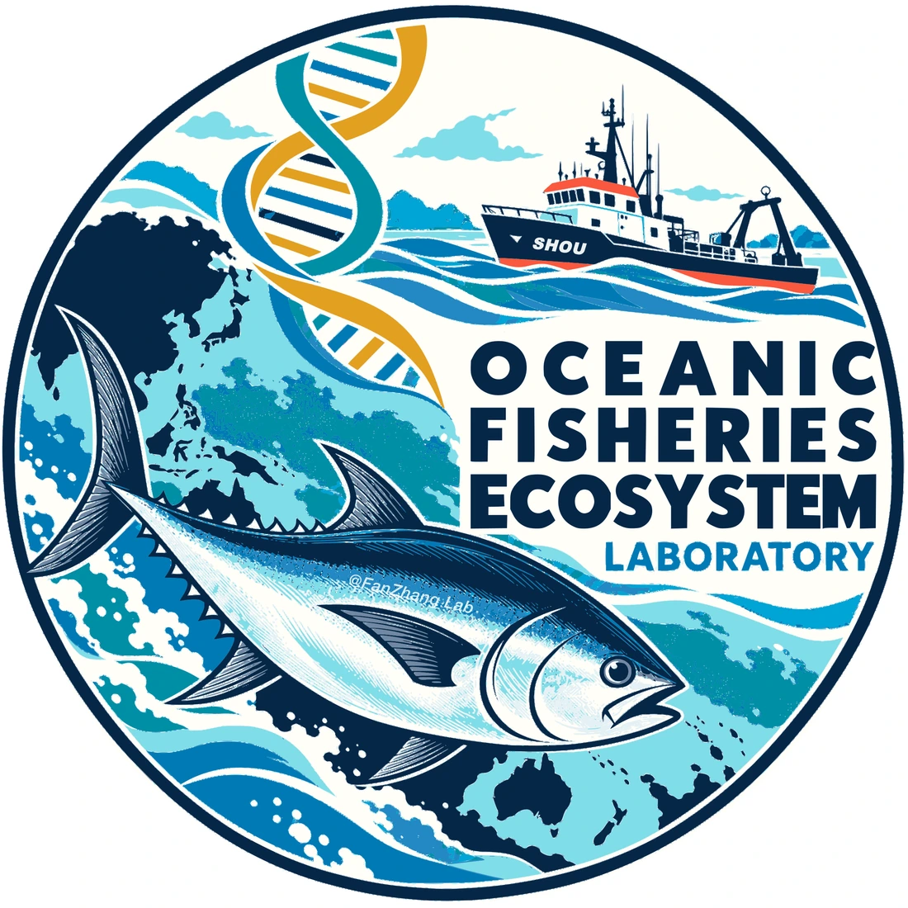
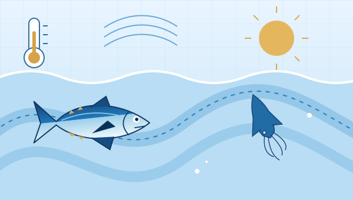
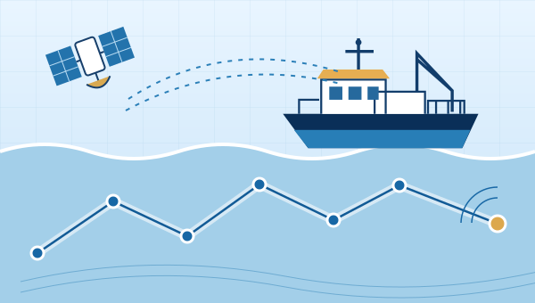
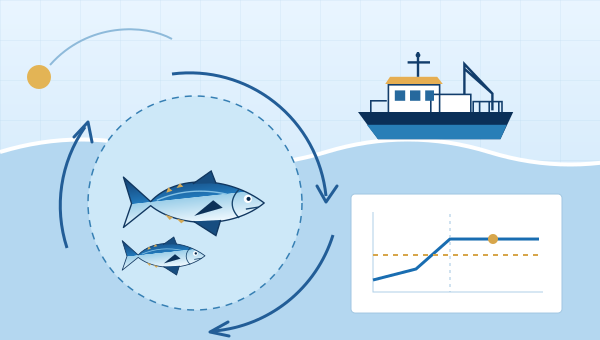

01 / POPULATIONSPopulation dynamics & stock assessment
Developing quantitative models to understand fish populations, growth, recruitment, and mortality.
Quantitative methodsOceanic Fisheries Ecosystem Laboratory
We study fish populations and develop quantitative approaches to fisheries assessment and management in a changing ocean.
Shanghai Ocean University / Shanghai, China

01 / Our research
Five connected directions link fish biology, ocean change, and fisheries decisions.

01 / POPULATIONSDeveloping quantitative models to understand fish populations, growth, recruitment, and mortality.
Quantitative methods
02 / OCEAN CHANGEStudying how environmental variability shapes the abundance, distribution, and life histories of marine species.
Ecological change
03 / FISHERIES DATAUsing artificial intelligence and vessel-tracking data to investigate fishing activity, fleet dynamics, and patterns of fishing effort.
Fisheries data science
04 / MANAGEMENTEvaluating management approaches that respond to changing populations, ecosystems, and uncertainty.
Science to managementConnecting life-history traits, biological observations, and DNA-based evidence to investigate population structure and marine biodiversity.
From organisms to populations02 / People

Principal investigator
Professor & Doctoral Supervisor
Fan Zhang studies fish population dynamics, fisheries stock assessment, and fisheries management. He joined Shanghai Ocean University in 2021 after completing his PhD in Integrative Biology at the University of Guelph.
PhD, Integrative BiologyUniversity of Guelph, Canada
Master’s, Fisheries ResourcesOcean University of China
Bachelor’s, Marine Biological Resources & EnvironmentOcean University of China
03 / Publications
Models, methods, and evidence for fisheries science.
Fish and Fisheries 27(3), 695–711
Communications Earth & Environment 7(1), 514
Marine Life Science & Technology Published online
Fish and Fisheries 26(6), 1040–1047
Marine Ecology Progress Series 769, 1–22
npj Ocean Sustainability 4(1), 46
Scientific Reports 15(1), 8642
Marine Environmental Research 204, 106923
Canadian Journal of Fisheries and Aquatic Sciences 82, 1–16
Canadian Journal of Fisheries and Aquatic Sciences 82, 1–14
Fish and Fisheries 26(1), 45–64
Fish and Fisheries 25(3), 491–507
Fishes 8(10), 516
Fishes 8(3), 131
Fish and Fisheries 23(5), 1121–1135
ICES Journal of Marine Science 78(6), 2233–2243
04 / Get in touch
For research enquiries and potential collaboration, contact Professor Fan Zhang.
f-zhang@shou.edu.cn